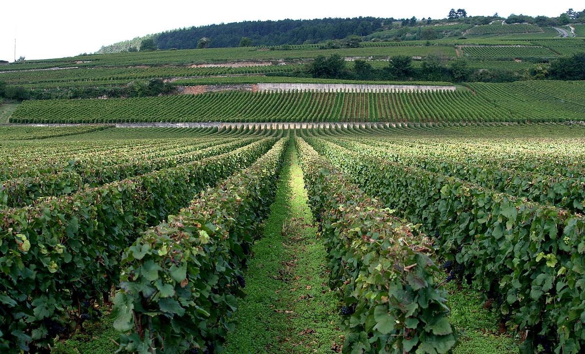
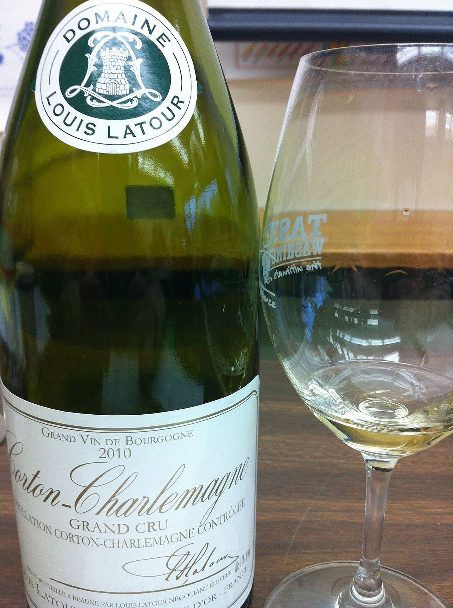

TINTO
La Côte de Beaune es la mitad meridional de la Côte d'Or, de Ladoix a Maranges. Produce algunos de los blancos de Chardonnay más reputados del mundo, como Montrachet, Meursault o Corton-Charlemagne, y tintos de Pinot Noir como Pommard y Volnay.

La Côte de Beaune prolonga hacia el sur la Côte de Nuits a lo largo de la misma falla, desde Ladoix-Serrigny hasta las Maranges, ya en el departamento de Saona y Loira. La franja de viñedo es algo más ancha y las laderas, en general más suaves, se orientan al este y al sureste. Su centro es la ciudad de Beaune, sede histórica del comercio del vino borgoñón y de numerosos négociants, y donde se encuentran los Hospicios de Beaune, fundados en 1443 por Nicolas Rolin, canciller del duque Felipe el Bueno. La subasta benéfica de los vinos de sus viñedos se celebra cada año en noviembre.
El clima es semicontinental, como en el resto de la Côte d'Or. Los suelos combinan calizas y margas del Jurásico; las margas, más abundantes que en la Côte de Nuits, se consideran especialmente favorables para la Chardonnay en zonas como Meursault, Puligny-Montrachet y Chassagne-Montrachet, mientras que los terrenos más ricos en arcilla y óxidos de hierro de Pommard convienen a la Pinot Noir.
En el norte, la colina de Corton, compartida por Ladoix-Serrigny, Aloxe-Corton y Pernand-Vergelesses, alberga el grand cru tinto Corton, el único grand cru tinto de la Côte de Beaune, y el blanco Corton-Charlemagne, cuyo nombre recuerda la tradición según la cual Carlomagno poseyó viñas en la colina. Siguen Savigny-lès-Beaune, Chorey-lès-Beaune y Beaune, con numerosos premiers crus. Al sur de Beaune, Pommard es conocido por tintos firmes y Volnay por tintos más delicados y perfumados. Más allá de Monthélie, Auxey-Duresses y Saint-Romain se encuentra Meursault, que no tiene grands crus pero sí premiers crus muy reputados, como Perrières, Charmes y Genevrières.
Puligny-Montrachet y Chassagne-Montrachet comparten el grand cru Montrachet y su vecino Bâtard-Montrachet; Chevalier-Montrachet y Bienvenues-Bâtard-Montrachet están en Puligny, y Criots-Bâtard-Montrachet en Chassagne. Completan la zona Saint-Aubin, Santenay y Maranges. Varios municipios pueden comercializar sus tintos con la denominación Côte de Beaune-Villages, y en las colinas del oeste se sitúan los Hautes-Côtes de Beaune.
A diferencia de la Côte de Nuits, la Côte de Beaune produce cantidades importantes de vino blanco. Los blancos de Chardonnay, fermentados y criados habitualmente en barrica, combinan amplitud, fruta y acidez, y los de los mejores viñedos pueden envejecer muchos años. Los tintos de Pinot Noir suelen ser algo más suaves y precoces que los de la Côte de Nuits, aunque Corton o los mejores premiers crus de Pommard y Volnay tienen una notable capacidad de guarda. La Aligoté se cultiva para la denominación regional Bourgogne Aligoté.


